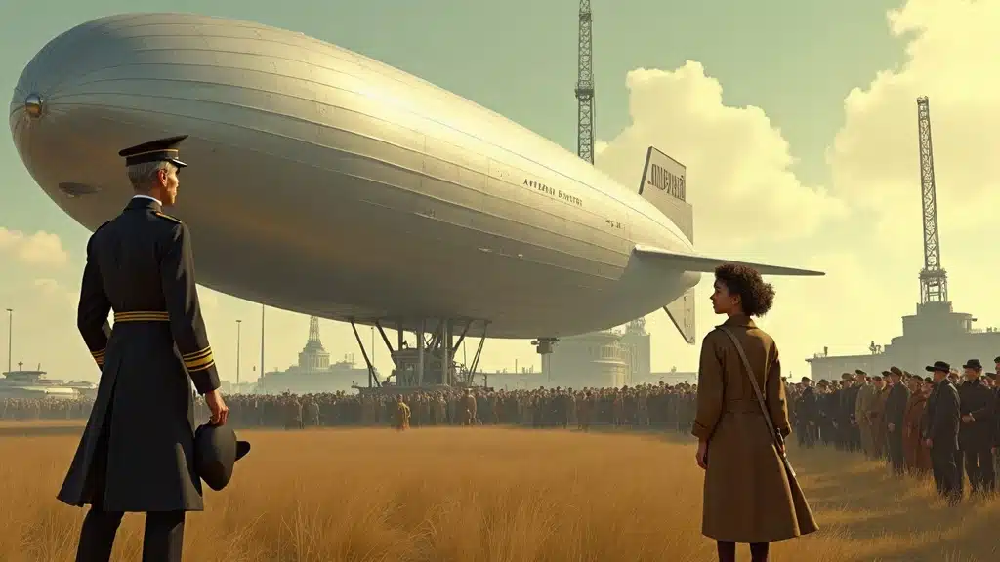
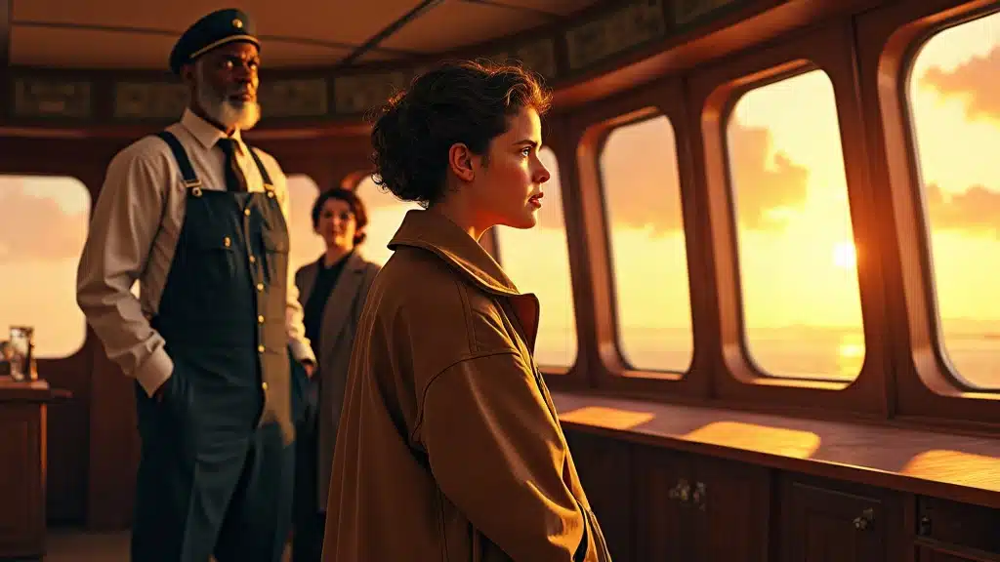
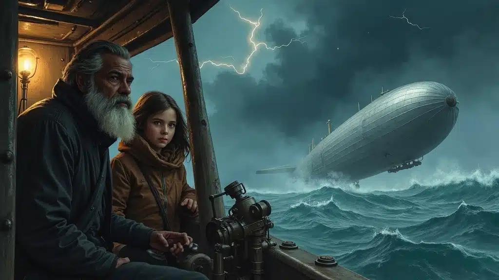

The Last Flight of the Meridian: A Dieselpunk Short Story
Updated 2026-11-15
An original short story from the Diesel & Deco collection. About an eight-minute read.
Want the look? The vintage maritime prints and the dark clockwork pieces are built on the same interwar palette — chrome, oxblood and cream.
I. The Last Ticket

In the spring of 1937, the airship Meridian was scheduled to make her final flight.
Everyone in the city of Halcyon knew it. The newspapers had printed her photograph on the front page for a week: four hundred feet of silver skin, her nose pointed at the great stepped towers of the Aurelia Building, the city’s lights reflected along her flanks like a string of pearls. END OF AN ERA, the headlines said. The new diesel liners crossed the ocean in half the time. The airlines had no use for a grand old lady who took three days to do anything.
Captain Rosalind Mercer had flown her for eleven years. She did not read the newspapers.
On the morning of the last flight, she stood at the foot of the mooring tower with her cap under her arm and watched the ground crew load the final mail sacks. The passenger list was short. Most of the city’s wealthy had already moved on to the fast liners; the ones who came today came for the photographs.
Which was why she noticed the girl.
She was perhaps twelve, in a coat two sizes too big, standing very still at the edge of the crowd and staring up at the Meridian as though it were the only thing in the world. She had no ticket. She had no parents with her. She had, Rosalind noted, a canvas bag over one shoulder and the particular stillness of someone working up courage.
"She’s going to try it," said Mr. Okafor, the chief engineer, at Rosalind’s elbow.
"I know."
"Shall I call the porter?"
Rosalind watched the girl a moment longer. "No," she said. "Let’s see how good she is."
II. The Stowaway

She was very good.
The Meridian was three hours out over the bay, the city a glittering model behind them, when Mr. Okafor knocked on the door of the control car and stood aside to reveal the girl, smudged with engine grease from crown to boots.
"Found her in the number two engine gondola," he said. "She’d tightened a loose fuel coupling before I got there. Did it properly, too."
The girl lifted her chin. "It was dripping."
"What’s your name?" Rosalind asked.
"Iris Kemp."
"And what are you doing on my ship, Iris Kemp?"
The girl hesitated, then told the truth all at once, the way children do when they have rehearsed a lie and abandoned it. Her father had built engines for the Meridian at the yards on the east river. He had talked about her every night at supper: the lift cells, the diesel engines in their gondolas, the way she turned in the wind like something alive. He had died in the winter. And this morning, when the newspapers said it was the last flight, Iris had decided that one of them, at least, would ride in her.
Nobody said anything for a while. The engines droned. Through the long windows, the evening sun turned the cloud tops to copper.
"Mr. Okafor," Rosalind said at last. "Does the number two gondola still need an engineer’s mate?"
"It does, Captain. Very much."
"Then she can work her passage."
III. The Storm

The storm caught them over the open sea on the second night.
It came up from the south faster than the forecasts had promised: a black wall of cloud, lightning walking along its edge. The Meridian shuddered as the first gusts hit her. Somewhere above the control car, a girder groaned.
"We can’t climb over it," said the navigator. "Not at this weight."
"Then we go around," said Rosalind. "Port twenty. Full ahead on all four."
But the number two engine was coughing. Rosalind could hear it from the control car: a ragged, hiccupping beat in the rhythm of the diesels. If it failed now, the ship would yaw into the wind, and in a storm like this, yawing was how airships died.
She keyed the speaking tube to the gondola. "Number two, report."
A crackle. Then a small, steady voice. "Fuel line’s icing at the bend, Captain. Mr. Okafor’s holding the throttle. I’m wrapping it."
"Wrapping it with what?"
A pause. "My coat."
Rosalind closed her eyes for a moment. Then she said, quite calmly, "Carry on, Mrs. Kemp’s daughter."
The engine coughed twice more, caught, and roared.
They flew the edge of the storm all night. At dawn, the clouds broke open over a calm grey sea, and the Meridian came through with all four engines singing.
IV. Halcyon
They came home on the third evening.
Halcyon rose out of the dusk the way it always had: first the beacon on the Aurelia Building, then the great stepped towers one by one, then the whole city lit from end to end in gold and white. Searchlights swept up to meet them. There were more people on the mooring field than had come to see them off. Someone had heard about the storm.
Iris stood beside Rosalind at the forward windows of the control car, wrapped in the captain’s spare jacket, which reached nearly to her knees. Her coat had not survived the fuel line.
"Will they really scrap her?" she asked.
"Yes," said Rosalind. "The liners are faster. The world wants fast now."
"That’s stupid."
"Probably." Rosalind looked out at the towers, the searchlights, the ribbon of the elevated railway curving between them. "But the world was stupid before, too. That’s how we got airships in the first place. Somebody looked at the sky and decided it was a road."
They moored at seven minutes past nine. The crew came down the tower one by one into the flashbulbs. Iris came last, holding Mr. Okafor’s hand, and stopped at the foot of the tower to look up at the Meridian one more time.
Rosalind crouched beside her and pressed something into her palm: the captain’s wing badge from her own jacket, silver and black enamel, a stylised airship crossing a sunburst.
"The yards on the east river are hiring apprentices," she said. "Engine shop. I know the foreman. Tell him the captain of the Meridian sent you."
"They don’t build airships anymore."
"No," said Rosalind. "So build whatever comes next."
V. Afterward
The Meridian was broken up that summer. Her silver skin was cut into sheets and sold. Her four diesel engines went to a shipping company in the north. Her name was painted over.
But for years afterward, the engine shop on the east river was known for one thing: an apprentice, later a foreman, later the first woman to run the yard, who kept a small silver wing pinned to her work coat, and who started every new apprentice’s first day the same way.
She would take them up to the roof, point at the sky above Halcyon’s towers, and say:
"Somebody once decided that was a road. Now. What are you going to decide?"
About this story
The Last Flight of the Meridian is an original short story written for Steamgears. Halcyon, the Meridian and her crew are fiction. The story belongs to our upcoming Diesel & Deco collection: art deco skylines, streamlined machines and the golden age of airships, arriving in early 2027.
Read our other stories, The Clockwork Herbarium and The Clockwork Seer.
The wardrobe the story belongs to starts in Start Here.
Shop the look: the Meridian’s world is on the Airship Armada \u2014 Vintage Engraving Tee and the Airship Storm \u2014 Vintage Engraving Hoodie, both drawn from the same period engravings the story is built on.